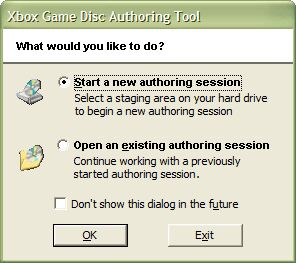

When you first start XbGameDisc, it displays the following dialog box, which asks whether you would like to start a new authoring session or open an existing one saved during a previous use of XbGameDisc.

Choose an appropriate option, then click OK. If you would prefer not to see this dialog box when you start XbGameDisc, select the Don't show this dialog in the future check box before clicking OK. To enable XbGameDisc to display the startup dialog box again, click Options on the Tools menu, select the Show Startup Dialog check box, then click OK.
If you choose to begin a new session, XbGameDisc displays a dialog box from which you may select the folder that contains all the files that make up your game title. This folder is called the staging area. The staging area must not be the root of a drive; you must place the game title's files in a subdirectory. When you have selected the correct directory, click OK.
Note The staging area should contain only files that are to be included on the game disc. Unrelated files, such as source code, should not be in the staging area. Also, if the root of the staging area does not contain a file called Default.xbe, XbGameDisc warns you that the game will not work without such a file.
When you create a new layout, XbGameDisc automatically generates a starting layout for you. To do so, it scans the title's staging area to determine the sizes of the files in your title. Files in the staging area that are larger than 256 MB in size are considered large files. All files in the layout, including large files, must fit between the security placeholders on the disc (For more information, see Laying Out the Game Disc). XbGameDisc then selects a layout that is likely to accommodate all of the large files that your title contains.
Note The initial layout that XbGameDisc generates may or may not be the optimal layout for your game. You can improve the efficiency of the layout using the optimizing features of XbGameDisc. For more information, see Optimizing a Game Disc).
If your title includes too many large files, it is possible that XbGameDisc cannot create a layout to accommodate them all. In this case, XbGameDisc provides a layout that accommodates as many large files as possible. It puts the rest of the large files in the Unplaced Files Window. (For a discussion of the Unplaced Files Window, see Laying Out the Game Disc.)
If you choose to open an existing session, a standard file dialog box appears, which prompts you for the file name and location of an XbGameDisc layout file (.xlo file). Enter an appropriate name and location, then click Open.
Note You can also start the XbGameDisc tool from the command line by typing xbgamedisc FileName.xlo, where FileName.xlo represents the optional name of the .xlo file to load when XbGameDisc starts.